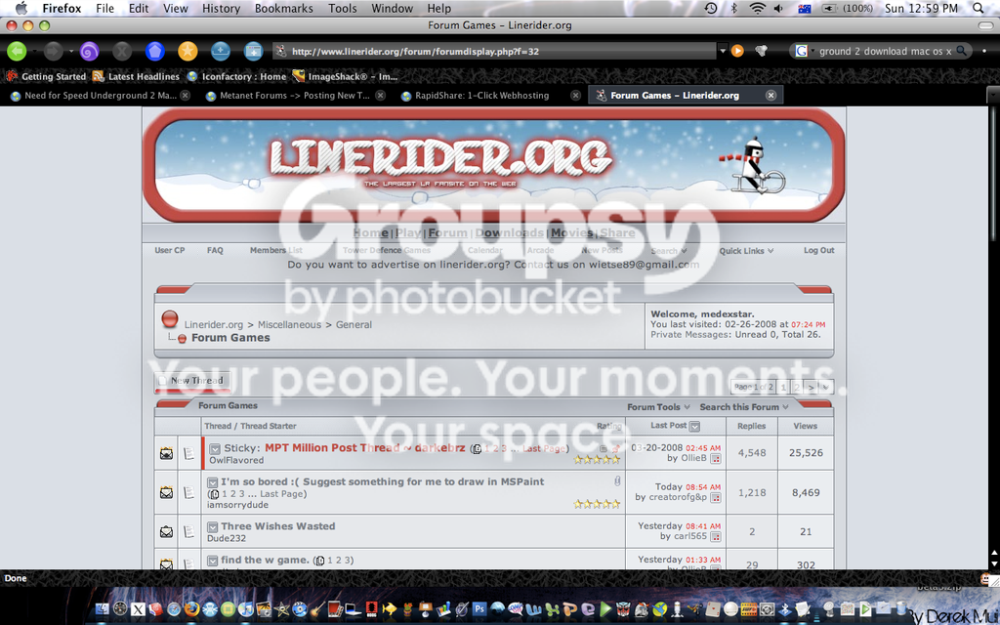
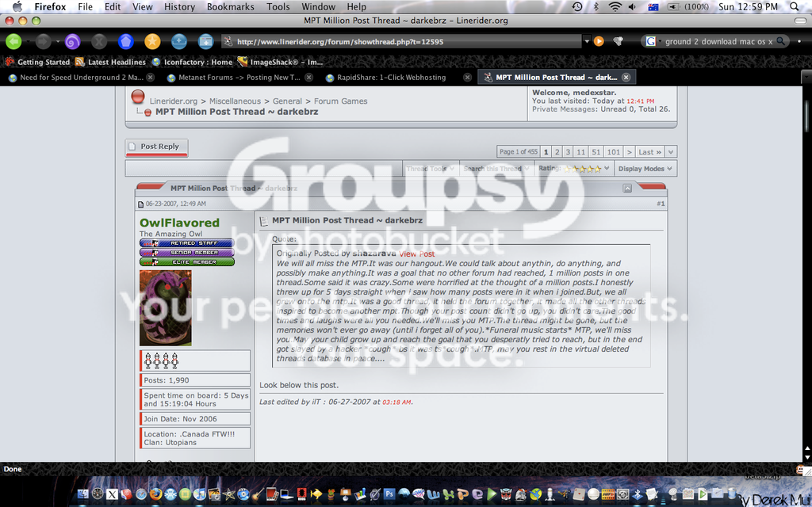
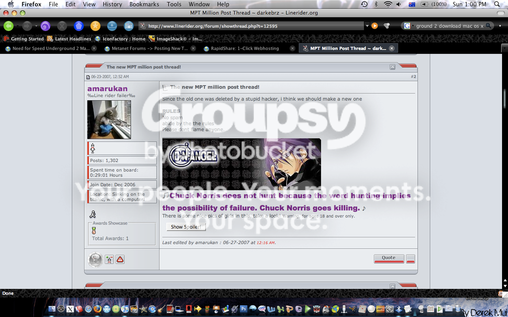

Although this isn't exactly a game-ish type, it would be fun to do this.
Basically, our goal is to get to 1 million posts in this thread, with no spam, or double posting.
This thread will help build up friendship, without having to make the process of making a useless thread.
There was another forum which I am in, and they tried this game. Unfortunately, a hacker deleted the post, so they had to start all over again (they were VERY close to 1 million, around 90,000).
Here are some examples of this MP thread on another forum:
(They started the thread last year in June, and is still active today, notice the amount of posts right now )
)
(Screenshot of the first post)
(Screenshot of the 2nd post, with the rules)
You can talk about ANYTHING. You can argue, confess, tease, post videos, etc. (So basically, this is like a thread of every chld-forum stuck together)
But if you want to say/ask something that should be in another child-forum, then post it there.
I'm not sure if this will work, it may get inactive overtime... but there's no harm in trying!
IF (yes, if, because there is a little possibility wemay even get to our target) we get to 1 million posts, then we can set another target to get to 2 million.
Hope we can pull this off...
-Medex
PS. Got beer?
Basically, our goal is to get to 1 million posts in this thread, with no spam, or double posting.
This thread will help build up friendship, without having to make the process of making a useless thread.
There was another forum which I am in, and they tried this game. Unfortunately, a hacker deleted the post, so they had to start all over again (they were VERY close to 1 million, around 90,000).
Here are some examples of this MP thread on another forum:
(They started the thread last year in June, and is still active today, notice the amount of posts right now
)
(Screenshot of the first post)

(Screenshot of the 2nd post, with the rules)

You can talk about ANYTHING. You can argue, confess, tease, post videos, etc. (So basically, this is like a thread of every chld-forum stuck together)
But if you want to say/ask something that should be in another child-forum, then post it there.
I'm not sure if this will work, it may get inactive overtime... but there's no harm in trying!
IF (yes, if, because there is a little possibility wemay even get to our target
) we get to 1 million posts, then we can set another target to get to 2 million.Hope we can pull this off...
-Medex
PS. Got beer?